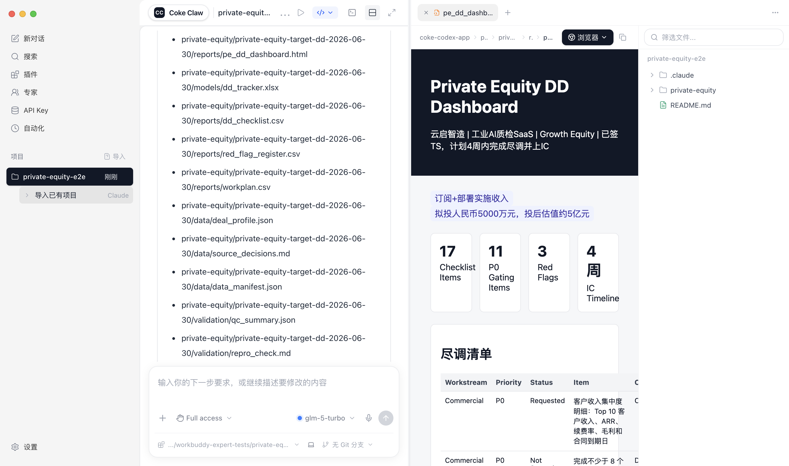
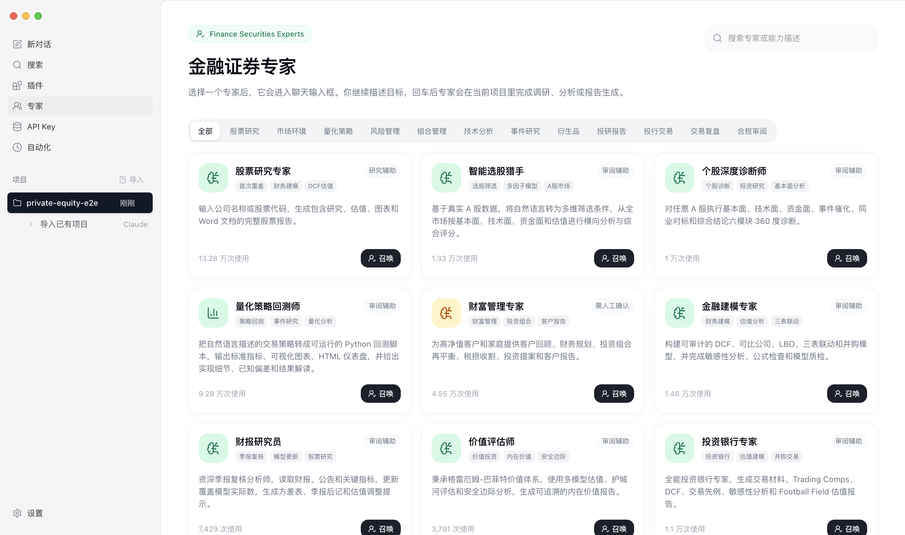
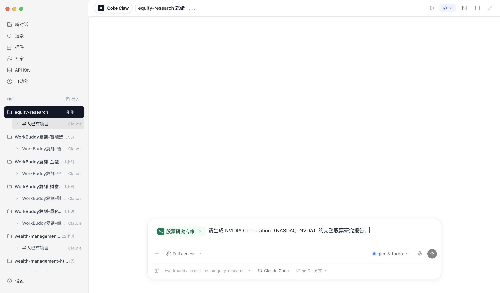
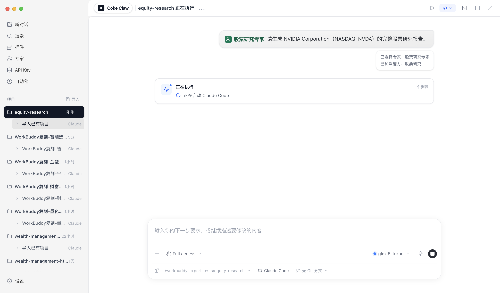
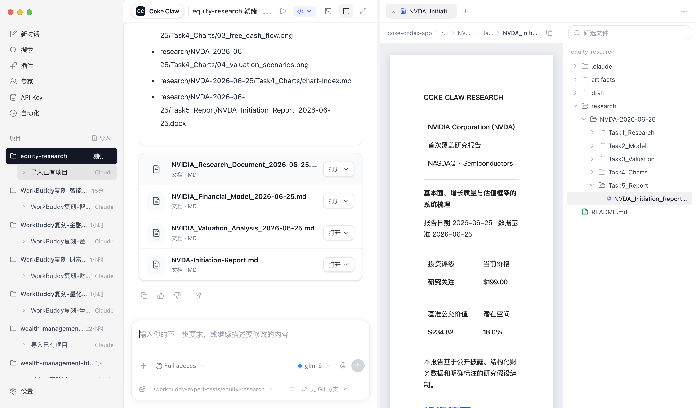
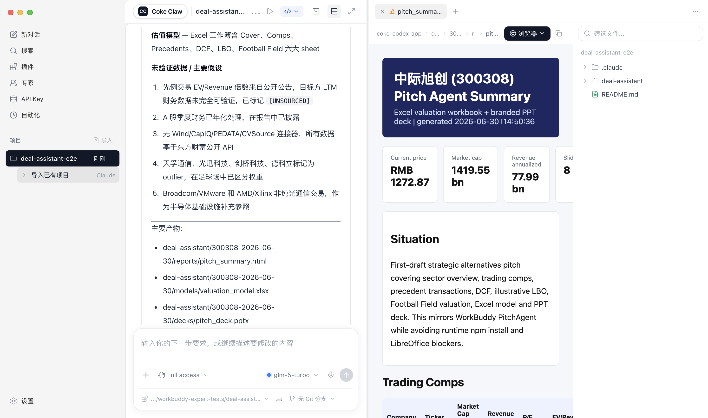
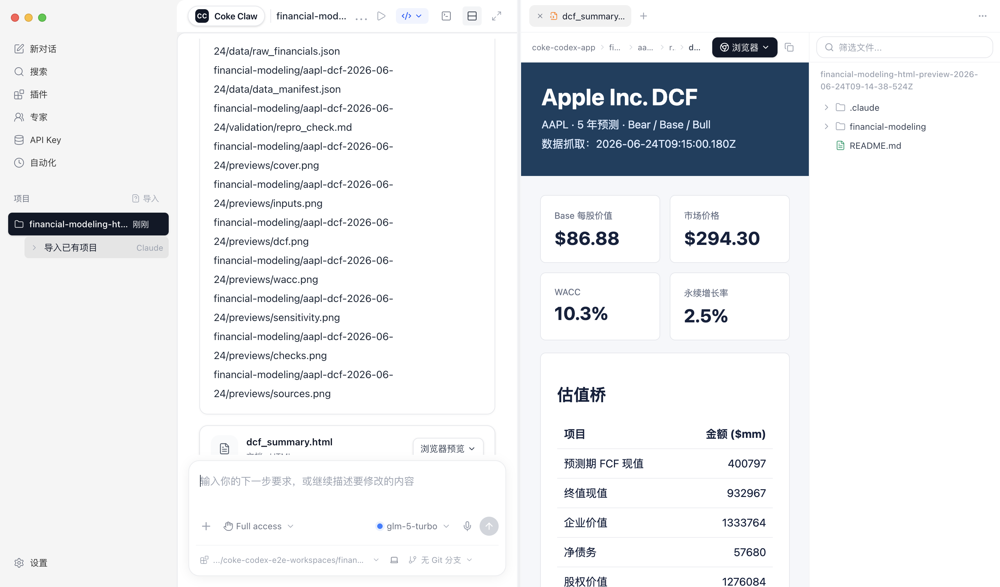
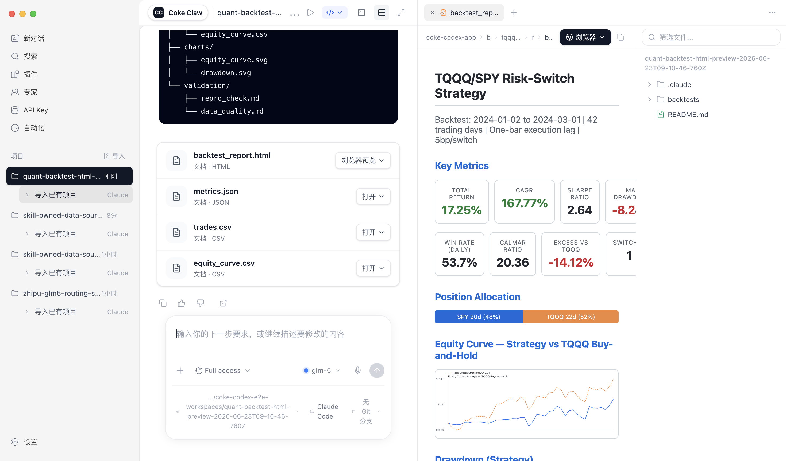

股票研究专家
公司研究、估值、图表和 Word 报告。
Desktop Agent for Finance Work
从股票研究、量化回测到投行估值和私募尽调，用户只说业务目标，专家 Skill 自动完成数据、脚本、报告和预览。

Experts
公司研究、估值、图表和 Word 报告。
真实数据、Python 回测和 HTML 仪表盘。
DCF、敏感性、Excel 模型和校验。
Pitch、可比公司、先例交易和 PPT。
尽调清单、红旗登记和 DD Tracker。
组合再平衡、税务影响和客户报告。
Screenshots







Download
macOS 包适合 Apple Silicon；Windows 包适合 x64。未公证的 macOS 测试包可能需要手动允许打开。